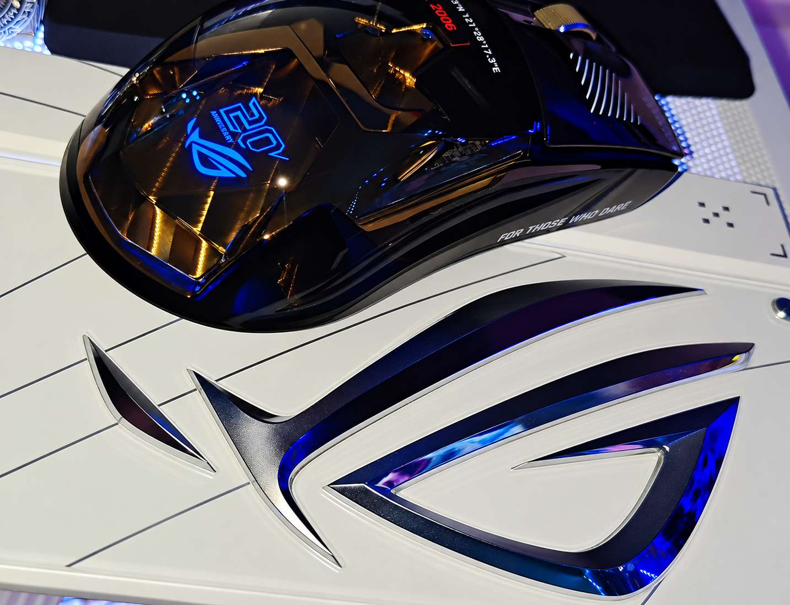
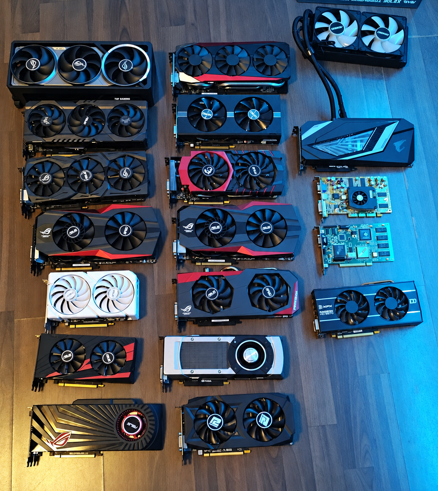

Hardware · Gaming · Team TABH
Crazy_Batto.
Inhaber und Gründer von Team TABH
36 Jahre alt
Social-Media-Content-Creator
für Hardware und Gaming
Über mich
Persönliche Vorstellung & Ausstattung
Ein Teil meiner Ausstattung
Meine ROG-Maus

Am 2022 habe ich wieder angefangen, mich mit PCs zu beschäftigen. Seitdem habe ich ein Ziel: meinen PC ständig zu verbessern. Dabei habe ich mich auf eine Marke konzentriert: ASUS ROG.
Mit der Zeit habe ich auch angefangen, Grafikkarten zu sammeln. Zu meiner Sammlung gehören die Matrix 5870, die Matrix GTX 780 Ti, die Poseidon GTX 780, die HD 7970, die MARS 760 Dual GPU und noch viele weitere Modelle.
Auch Mainboards gehören zu meiner Sammlung, darunter das ROG Crosshair VIII und zweimal das ROG Crosshair VIII Formula.
Mein besonderes Schmuckstück ist das ROG CROSSHAIR X870E GLACIAL – das Herz meines neuen Systems. Dazu gehört auch die ROG-ASTRAL-RTX5080. Mehr darüber erfährst du unter „Mein Gaming-Setup“.
Grafikkarten & Mainboards
Meine Hardware-Sammlung
Vom einzelnen Sammlerstück bis zur Hardware-Wand – hier zeige ich dir meine Sammlung aus verschiedenen Perspektiven.

Meine Setup-Geschichte
Vom Anfang bis heute
Eigene Projekte
Meine Software

Meine Ideen. Mein Tool.
Multi-Chat, RGB-Vorschau, Lüfterkurven und Jarvis – ein erster Einblick in mein eigenes Softwareprojekt.
In Entwicklung · Noch nicht freigegeben Das Projekt kennenlernen
Dein Team. Dein Discord.
Moderationsdienste erfassen, Stream-Abfragen stellen, Bilder teilen und Discord-Events anlegen – mit Server- und Kanalauswahl.
Android · Zugang nach meiner Freigabe Die Discord-App kennenlernenMit Discord anmelden, Zugang anfragen und nach meiner Freigabe die Android-App herunterladen.
Mein Team
Team TABH
Inhaber und Gründer: Crazy_Batto
Kontakt
Social Media
TikTok · Twitch · YouTube · Discord